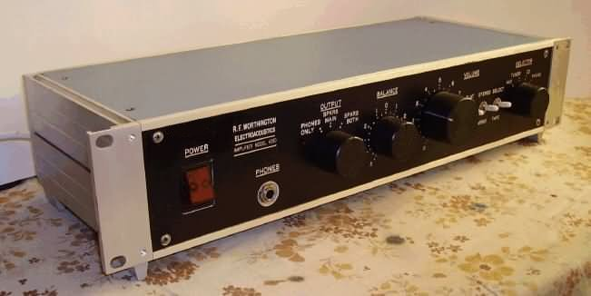
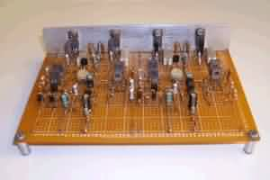
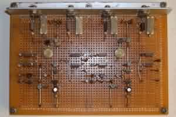
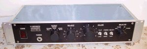
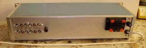
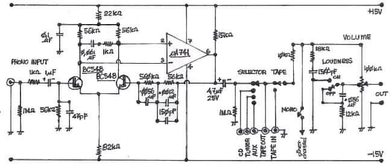
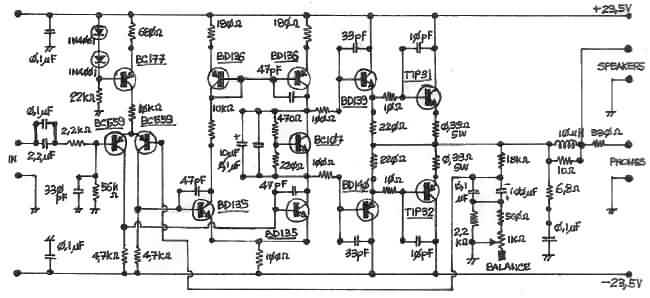
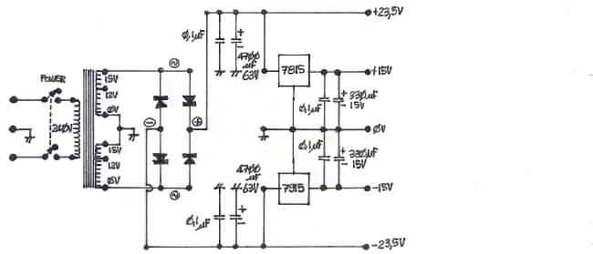

|
NAVIGATION
TOP of Page
MAIN Page
HOME Page
STEREO AMPLIFIER
About the Amplifier
Amplifier Design
Listening Tests
Specifications
Circuit Diagram
|
About the Amplifier
 Low Power Stereo Amplifier
This design is for a low power version of an Electronics Australia Playmaster design, with modifications
to prevent Transient Intermodulation Distortion (TID). The amplifier produces a cleaner
sound than many high end amplifiers. This design would be a suitable project for a first time
amplifier builder as it has been found to work correctly the first time it was tested for each of
the four examples.
It has resulted from the frustration of trying to build the Playmaster 132, an
Electronics Australia designed 45 w/channel amplifier. It was supposed to become the centre
of my audio system, but kept blowing up, taking out the final transistors. I eventually saw the
light and purchased a Sansui AU-217 Amplifier. I still had an interest in amplifier circuitry and
design, so I set out to build an amp that would satisfy my creative needs. This circuit is the
result, with a lot of the design based on later Playmaster amplifiers.
HOME
MAIN
TOP
Amplifier Design
A modern low noise high gain op-amp could be used to replace the 741, but the phono input seems to be pretty
good as is. Connecting leads to the rear sockets are twisted pairs of normal insulated wire to maintain frequency
response and balance out any hum and noise. The amplifier illustrated does not have the twin tape switching system
- that belongs to the second amplifier I built for Dad. The front panel controls are: Power, Headphone socket,
Speaker switching, Balance, Volume, Loudness, Mono/Stereo, Tape, Input Selector - Aux, Tuner, CD, Phono.
The Power amplifier can be built onto a small vero board as per the photographs. This is the amplifier I use for
testing speakers. The differential pair of BC558 transistors can be replaced with a similar twin transistor. I
used two 2SA-978's reclaimed from an earlier scrapped amplifier. With the set values of resistor across the
biasing transistor (BC107 Vbe multiplier) there is no need for a potentiometer to adjust the bias for minimal distortion.
|

Amplifier PCB from the front
|

Amplifier PCB from the top
|
HOME
MAIN
TOP
The balance control is a 1kohm Alps brand originally sourced from Tandy/Dick Smith. Replace the balance pot and
all the resistors with a single 390ohm resistor if you do not want a balance control. The volume control is also
an Alps brand tapped potentiometer sourced from Tandy/Dick Smith, but can be easily scavenged from a wrecked
amplifier. Notice all the electrolytic capacitors are bypassed with a 0.1uF capacitor to ensure good RF bypassing
and earthing.
Most of the components can be bought from your local Jaycar or Altronics store, or from scavanging older electronics.
A 15volt rms, twin winding, 2amp transformer supplies adequate current for the amp through a 10Amp bridge rectifier.
The preamp is driven from twin 15 volt regulators. The front panel is a glued on 'Trafelite' lable, created by a work
mates father that did engraving. The chassis is a rack mounting instrument case, scavenged from a clean out at work.
The amplifier was fun to build and remains an oft used item from when it was built 20 years ago. It is much better
acoustically than the Sansui AU-217, even after rebuilding, and is more musical than the higher powered NAD amplifiers.
It is adequately powered to drive reasonably efficient speakers to quite loud levels and is quiet, even on phono input,
between tracks.
|

Amplifier front panel
|

Amplifier rear panel
|
HOME
MAIN
TOP
Listening to the Amplifier
One of the reasons for the success of the amplifier is the lack of transient intermodulation distortion (TID).
Initial observation on an oscilloscope saw the amplifier burst into RF oscillation on transients. This was cured
by lagging the Miller capacitance on the output transistors (47, 33 and 10pF capacitors) to ensure the amplifier
satisfied Nyquist gain/phase stability criterion. This setup now gives the amplifier a very clean sound and is
exceptionally sweet on transients such as cymbals. It also means the amplifier runs very cool and only requires
a minimalist heat sink.
Amplifier Specifications
|
Specifications :
|
Low Power High Fidelity Amplifier
|
|
Power Output :
|
13.7W rms into 8ohms, both channels driven
|
|
Frequency Response :
|
20-37,000hz at -3dB
|
HOME
MAIN
TOP
Amplifier Circuit Diagrams
 Phono Preamplifier, Input Selector and Volume/Loudness Control
 Power Amplifier and Balance Control
 Power Supply for Power Amplifier and Preamplifier
HOME
MAIN
TOP
|